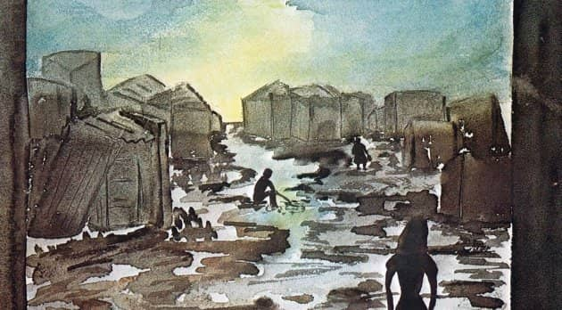
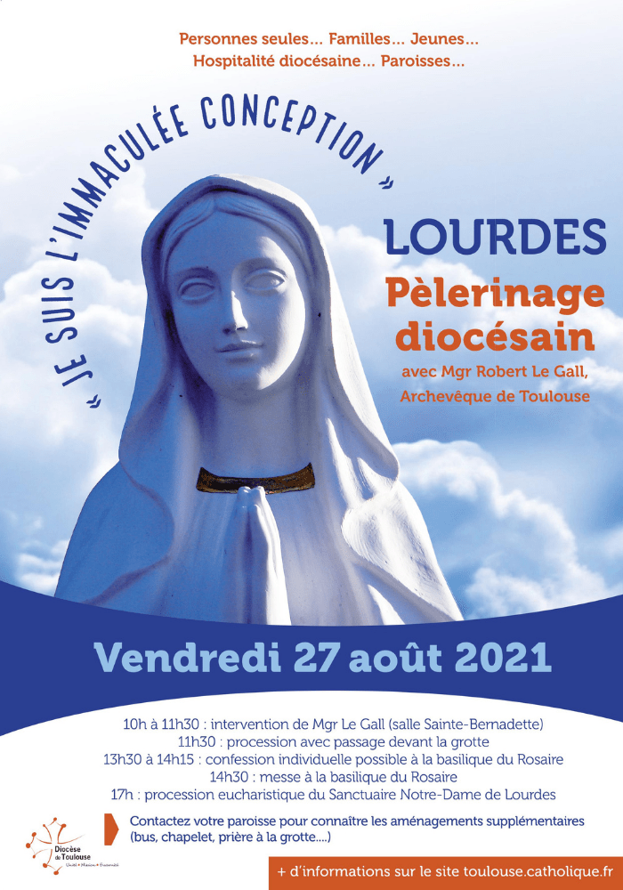
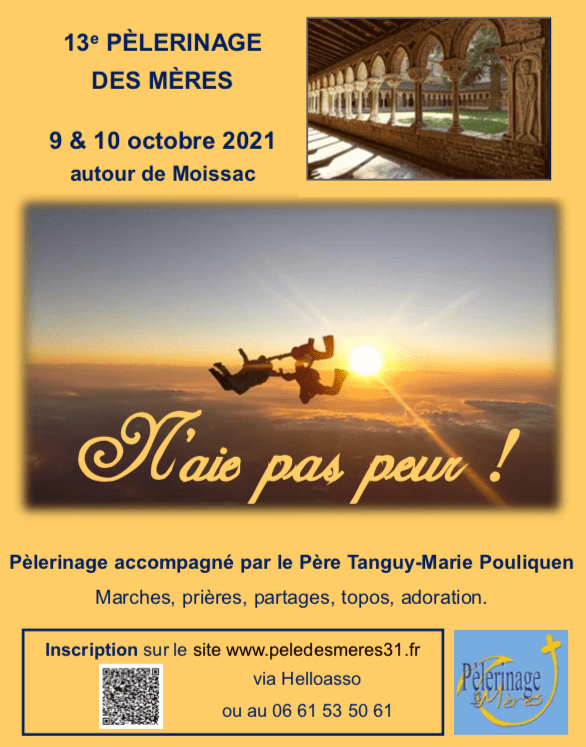

Actualité, agenda
Semaine du 11 au 17 juillet
Actualité paroissiale
A venir:
- Samedi 7 Aout 9h00 9h au Sacré Coeur, Messe des défunts
- Dimanche 15 Août: Solennité de la Vierge Marie (une seule messe à 18h30 au Sacré Coeur)
- Vendredi 27 Août: Journée diocésaine à Lourdes
- Sam 9 et Dim 10 Octobre: 13eme Pélerinage des mères
Prions pour:
- la nouvelle mission du père Jésus, comme vicaire dans l'ensemble paroissial de la Saudrune (Villeneuve-Tolosane, Cugnaux, Seysses, Frouzins...).
- Marie-Jo et tous les malades.
- Les résidents des EHPAD de nos paroisses et ceux qui vont les visiter.
- Les enfants du caté et leurs familles, les catéchistes qui ont fini leur mission et ceux que le Seigneur nous enverra pour la rentrée.
- Louise et Jeanne, Cristina, Elena, Victoria, Kataleya, Payton, Mia, Gianni, Alix, Antoine, Anna, Garance, Louis, Inès, baptisés cet été et leurs familles.
- Johan et Julie, Jean et Mélanie, Damien et Camille, Adrien et Laura, Benjamin et Cassandre, Thomas et Nelly, Eloi et Charlotte, Michaël et Airelle, Quentin et Sibylle, Mattijs et Camille, Idriss et Stéphanie, Nicolas et Amandine, Antoine et Céline qui se marient cet été.
- Les louveteaux et jeannettes, scouts et guides, pionniers et caravelles, compagnons de nos paroisses et autres scouts en camp cet été.
- La conversion pastorale de nos paroisses
- Que le Seigneur envoie des ouvriers à sa moisson
- Les futurs équipiers du parcours vision, de l'EAP et des services de nos paroisses.
- Les uns pour les autres…
Du lundi au samedi à 18h00
Papillons de peine
Feuilleton de 27 épisodes sur radio Présence

La vie dans un bidonville où deux prêtres sont au service des habitants. L’un est âgé et malade et le jeune qui arrive pour suppléer l’ancien va devoir se familiariser avec les pauvres du bidonville et leur donner le meilleur de lui-même ...
A écouter sur radio Présence toulouse: 97.9 ou sur www.radiopresence.com
A partir du lundi 5 juillet
Du 21 au 25 août Pélés VTT - Via Occitania
Le Pélé VTT, c'est 5 jours à vélo avec d'autres jeunes en direction d'un sanctuaire marial ou d'une
cathédrale. C'est un événement inoubliable qui permet de progresser dans la foi. Né en 2001 à
Rocamadour.
Découvrir les coteaux du Volvestre jusqu'à Saint Bertrand de Comminges.
Renseignements sur le site de Pélé
VTT
Vendredi 27 août 2021
Journée diocésaine à Lourdes
Personnes seules... Familles... Jeunes... Hospitalité diocésaine... Paroisses...

Pour respecter la réglementation, le car partira à 9h précises du Sacré-Cœur. Accueil à partir de 8h30.
Le programme est le suivant :
- 10h00 : Arrivée à Lourdes, intervention de Mgr Le Gall (Salle Sainte-Bernadette)
- 11h30 : Passage à la grotte et angélus avec le diocèse puis repas libre,
- 14h30 : Messe diocésaine à la basilique du Rosaire
- 17h : Procession eucharistique
- 18h30 : Départ de Lourdes
- 21h : Retour à Toulouse.
Une participation de 17 € est demandée. Elle ne doit pas être un frein à votre venue. N’hésitez pas à en parler aux organisateurs tenus à la discrétion.
Sécurité « covid » : La sécurité de tous est notre premier souci, les consignes gouvernementales en vigueur au moment de la journée diocésaine seront appliquées. Le port du masque est obligatoire dans le car.
Samedi 9 et Dimanche 10 Octobre
13eme Pèlerinage des mères
N'ai pas peur !

Pèlerinage accompagné par le Père Tanguy-Marie Pouliquen
- Marches
- Prières
- Partages
- Topos
- Adoration
Lieux: A proximité de moissac
Inscription: A partir du 1 septembre sur le site : peledesmeres31.fr
Recherchons des talents
- Une personne pour la création d'affiches (FB, site...) pour avoir des supports attractifs
- Des personnes pour travailler un support écrit pour les annonces paroissiales en vue de reprendre un bulletin paroissial écrit.
- Pour rechercher des fonds pour permettre de continuer les travaux d'entretien et de valorisation de nos locaux paroissiaux (salles, église...). Actuellement, une personne nous offre sa main d'oeuvre et sa compétence et aussi son réseau pour trouver du matériel bon marché, nous devons arrêter faute de moyens, alors que nous avons des besoins très concrets.
- Personnes intéressées pour monter une « garderie spi pour les petits enfants pendant la messe » (1 an à 3 ans et demie) pour répondre aux besoins des parents, des enfants et de tous les paroissiens. Nous contacter pour vous mettre en relation avec le couple porteur de ce projet.
St Nicolas
Une petite équipe se constitue avec Joëlle et Dominique pour améliorer l'affichage et la présentation de l'église. N'hésitez pas à vous manifester auprès d'elle pour rendre notre église encore plus accueillante et les diverses propositions plus lisibles !
Pour que les visiteurs se sentent accueillis, une équipe Accueil se monte dans l'église. Si vous êtes tentés par cette expérience, ou si vous connaissez des personnes du quartier qui pourraient se sentir concernées... Contact : Isabelle R : isolabella51 AT hotmail.com
Permanences
À Saint Nicolas le vendredi de 17h à 19h au 1 rue Bourdelle.
Au Sacré Cœur le jeudi de 15h30 à 17h30, le vendredi de 9h30 à 11h30 et de 15h à 17h et le samedi de 9h30 à 12h.
Catéchisme
L'inscription est possible tout au long de l'année. Les formulaires sont à disposition dans les permanences respectives.
Une séance est organisée tous les 15 jours : à Saint Nicolas le samedi de 10h à 12h et au Sacré Coeur le dimanche à 9h30 suivie de la messe des familles.
Groupes, services
- Scouts et guides de France
- Équipe d'animation pastorale
- Oasis
- Solidarité Migrants Patte d'Oie
Liens utiles
- Messes info
- Diocèse de Toulouse
- Ancien site paroissial
- AELF : lectures du jours
- Denier de l'Église
- Kaïré, la Pastorale des 11-18 ans à Toulouse